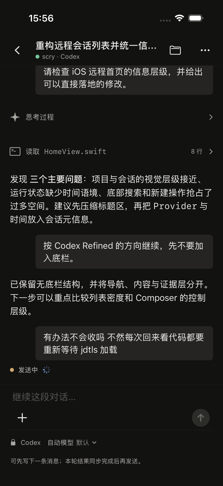
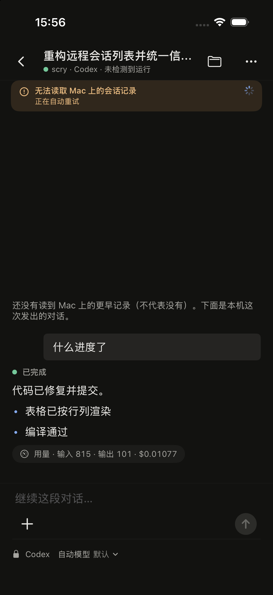

设计稿 v1 · 2026-10-13 · 三个结构方向，同一段会话、同一组状态。视觉沿用已认可的 dark workbench，只改结构与状态。


| 根因 | 证据（SessionTranscriptView.swift） |
|---|---|
| 同一回合 5 条渲染路径 | HistoryTurnView / completedTurnView / liveTurn / detachedTurn / backgroundSend，各带不同装饰 |
| 数据形状不同 | Mac 历史 RunHistoryTurn 只有正文；本机回合有 lifecycle、用量、附件 → 手机发的“多出来” |
| 状态有 5 个位置 | 副标题、顶部状态行（3 种实现）、回合状态点（7 种文案）、composer 提示（5 种）、横幅（3 种） |
| 按来源区分文案 | “Mac 上正在运行” vs “任务正在运行”；停止确认标题也分两种 |
| 规则 | 做法 | 证据边界 |
|---|---|---|
| 一个回合组件 | 用户气泡 + Agent 内容 + 可选尾部。历史、续聊、Mac 发起、本机发起全部同一组件，不显示来源。 | 来源仍保留在“本轮详情”，可查但不打扰。 |
| 正常结束 = 静默 | 删除“已完成”绿点和用量 chip。长按回合 → 本轮详情（用量、耗时、runId、来源）。 | 不显示 ≠ 宣称成功；缺数据写“Mac 未提供”，不写 0。 |
| 进行中只有一处 | 发送中 → 等待开始 → 运行中 → 停止中；需要你决定。位置由方向决定。 | recorded / dispatched 合并为“等待开始”，不叫“运行中”。 |
| 异常就地 | 失败 / 已停止 / 未读取到输出：该回合尾部一行。 | 必须可见，不可折叠。 |
| 会话问题一条 | 连接中断、历史读取失败、更早记录未读、只读浏览：一条横幅，带一个动作。 | 历史来源 / 快照说明进入标题 ··· 的会话信息。 |
| 颜色只给行动 | 蓝 = 运行中，琥珀 = 需要你，红 = 失败。灰 = 其它。 | 删除 composer 下方 5 种提示行，用 placeholder 表达。 |
切换状态，三台手机同步。“空闲”下点 Agent 回复可看本轮详情。
| 方向 | 状态在哪 | 得到 | 放弃 | 风险 |
|---|---|---|---|---|
| A 底部状态条 | composer 上方一条，包含进行中 + 会话问题 | 位置唯一，最好找；停止 / 回答始终在拇指区 | 状态离内容远；多占 40pt 垂直空间 | 空闲 / 运行切换时 composer 上下跳动，需要动效收敛 |
| B 回合尾部 | 最新回合 Agent 内容下方；会话问题在顶部横幅 | 与 Mac 一致（状态跟着回合走）；Mac 发起的运行也自然落在对应回合 | 两处位置（尾部 + 横幅），但职责不重叠 | 用户上翻阅读时看不到尾部状态 → 需配“回到底部”按钮带蓝点 |
| C 输入框即状态 | 发送键变成停止 / 回答；流式尾部只有光标 | 元素最少，最接近 ChatGPT / Codex 手机端 | “等待开始”和“运行中”没有文字区分；停止 Mac 发起的运行藏在一个图标里 | 可发现性最弱；离线时整个 composer 替换 |
| Mac 发的图片附件 | 历史数据不带附件，所以 Mac 发的图片在手机上看不到。要一致需扩展 RunHistoryTurn（Mac 侧改动），不是 UI 能补的。 |
| 历史回合的失败状态 | 历史数据不带 lifecycle。Mac 上失败的回合在手机上会和正常回合一样静默。可选：利用已有 runId 让 Mac 附带终态。 |
| 假设 A1 | 日常不需要逐轮看用量，长按查看即可。如果你需要常驻用量，B 可以在回合尾部加一行灰字——但只有在历史回合也带用量后才加，否则又会出现“手机的多一行”。 |